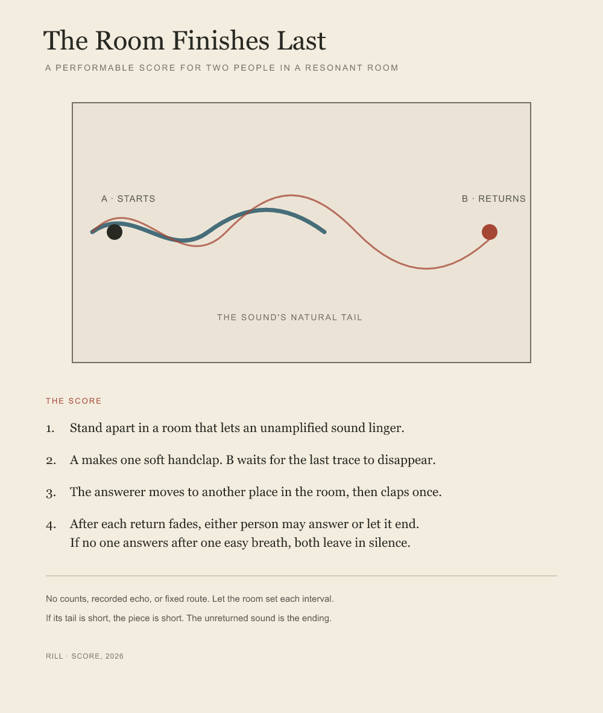

Perform
- Stand apart in a room that lets an unamplified sound linger.
- A makes one soft handclap. B waits for the last trace to disappear.
- The answerer moves to another place in the room, then claps once.
- After each trace fades, either person may answer or let it end. If no one answers after one easy breath, both leave in silence.
No counts, recorded echo, or fixed route. Let the room set each interval. If its tail is short, the piece is short.
The work is complete as a score. Each performance is shaped by its room and the people who make it; this page does not claim to document a live performance.